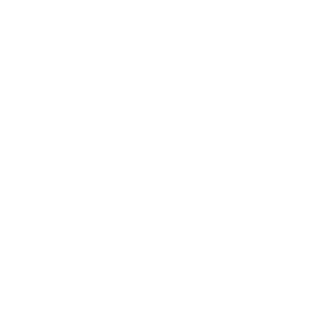
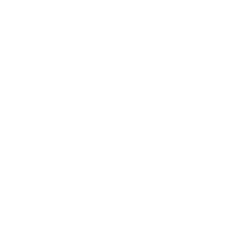

Campeonato Paulista
Projeto Mobile desenvolvido para menção na matéria de programação mobile 2. Sistema simples que mostra uma tela de "home," e uma tela de "campeões", onde na última, mostra uma lista ordenada com os maiores campeões do campeonato paulista, com seus nomes, escudos e quantidade de títulos.
Qikbyte
Interface desenvolvida para estudos de Node.js nas aulas de Programação Web 2. O projeto é uma interface simples, feita usando EJS, e Bootstrap, contendo quatro rotas: "Home", "Sobre", "Cadastro", "Galeria".
Bootstrap
Node.js
Express
EJS
Gerador de senha
Gerador de senhas aleatórias e seguras desenvolvido em HTML, CSS e JavaScript. Permite criar senhas personalizadas com base no número de caracteres selecionado pelo usuário.
Folha de pagamento
Atividade para menção na matéria de PW2. O objetivo era desenvolver um calculo de folha de pagamento, usando DOM (Document Object Model), onde o usuário digita os seus dados, e o sistema retorna a resposta.
Vai de Bus
Atividade Diagnóstica realizada para testar os conhecimentos em HTML, e CSS. Desenvolvido com base nas imagens fornecidas pelo professor.
Calculadora
Calculadora que me permitiu testar meus conhecimentos sobre interatividade com JavaScript, estilização com CSS e estruturação semântica com HTML.
Campeonato Brasileiro
Atividade realizada para menção na matéria de Programação Web 2. Feita utilizando Node.js, EJS, e Bootstrap
Fintech-User
Landing page de uma Fintech. Nesse projeto foram usados HTML, CSS, e Javascript.
Previsão de tempo - API
Sistema funcional que mostra dados sobre o tempo em cada região (Temperatura, umidade e velocidade do vento). Nesse sistema foram usados, HTML, CSS, Javascript, e a API do OpenWeatherMap.
HTML
CSS
Javascript
OpenWeatherMap - API
PetShop
Atividade desenvolvida para aprovação na matéria de Programação Web 3, em que o objetivo era implantar cookies e o google analytic`s para o sistema de petshop, além de usar boas práticas de programação, como por exemplo, usar META TAG`s.
JavaScript
Cookies
Meta tags
Google analytics
Fintech-Admin
Interface da página administrativa de uma fintech. Nesse projeto foram usados HTML, CSS, e Chart.js.
SoulTravel
Interface responsiva de uma agência de viagens fictícia. Desenvolvido em HTML, CSS e Javascript.
CRUD Cursos
Projeto desenvolvido para a disciplina de Programação Web 2, implementando um CRUD completo com Node.js, Bootstrap, e PostgreSQL.
Node.js
Bootstrap
Express
PostgreSQL
EJS
Sistema de login
Sistema simples de cadastro e login de usuários, com as telas de home, cadastro e login. Feito com HTML, CSS, Javascript, Node.js e MySQL em nuvem.
HTML
CSS
Javascript
Node.js
MySQL
Blop-App
Este projeto é um blog onde os usuários podem se cadastrar, fazer login e acessar diversas postagens. Conta com um painel administrativo que permite a gestão completa do conteúdo, incluindo a criação, edição e exclusão de postagens e categorias. O sistema foi desenvolvido utilizando Node.js, MongoDB Atlas, e Bootstrap para a interface.
Node.js
Bootstrap
MongoDb-Atlas
Techbit-mv
Sistema de vitrine de rebites e rebitadeiras, onde os usuários cadastrados podem realizar pedidos, ler blogs, tirar suas dúvidas. Conta com um painel administrativo que permite a gestão de pedidos, produtos, postagens, etc.
EJS
CSS
JavaScript
Node.js
MySQL


 




